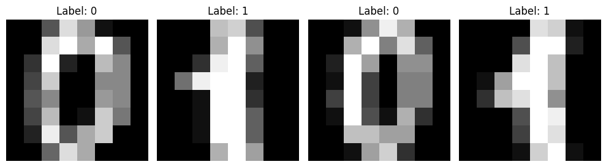
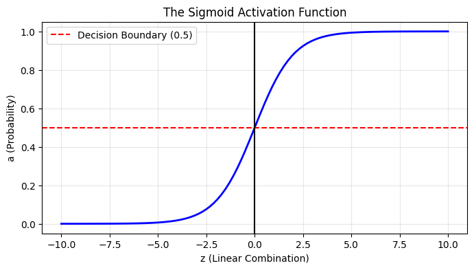
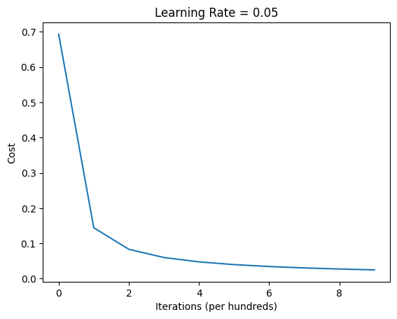

Building Logistic Regression from Scratch: A Neural Network Perspective
If you want to truly understand deep learning, you have to look under the hood. While libraries like TensorFlow and PyTorch make it incredibly easy to build models with a few lines of code, they abstract away the mathematical elegance that makes these algorithms work.
Today, we are going to build a Logistic Regression classifier from scratch using nothing but NumPy. But we aren’t going to build it the traditional statistical way. Instead, we are going to frame it as a single-layer neural network. This “neural network mindset” will lay the exact foundation you need to understand deep, multi-layer architectures later on.
1. The Mathematical Blueprint
Before writing any code, we need to understand the math. In binary classification, our goal is to map an input vector \(x\) to a probability \(\hat{y}\) (where \(0 \le \hat{y} \le 1\)).
The Forward Pass (Inference)
For a single training example \(x^{(i)}\), the computation happens in two steps:
Linear Combination: We compute the weighted sum of the inputs plus a bias term. \[z^{(i)} = w^T x^{(i)} + b\]
Activation: We pass this result through a Sigmoid function to squash the output between 0 and 1, interpreting it as a probability. \[\hat{y}^{(i)} = a^{(i)} = \sigma(z^{(i)}) = \frac{1}{1 + e^{-z^{(i)}}}\]
The Cost Function
To train our model, we need to measure how badly it’s performing. For logistic regression, we use the Binary Cross-Entropy (Log-Loss) cost function. For a single example, the loss is: \[\mathcal{L}(a^{(i)}, y^{(i)}) = - y^{(i)}\log(a^{(i)}) - (1-y^{(i)})\log(1-a^{(i)})\]
The total cost \(J\) is the average loss over all \(m\) training examples: \[J = -\frac{1}{m} \sum_{i=1}^m \left[ y^{(i)}\log(a^{(i)}) + (1-y^{(i)})\log(1-a^{(i)}) \right]\]
The Backward Pass (Gradients)
To minimize the cost function, we use Gradient Descent. This requires computing the derivative of the cost function with respect to our weights (\(w\)) and bias (\(b\)). Using the chain rule (calculus), the gradients across the entire dataset of size \(m\) simplify beautifully to:
Instead of relying on external files, let’s generate our own image classification dataset using scikit-learn. We will load 8x8 pixel images of handwritten digits and train our model to distinguish between the digit 0 and the digit 1.
import numpy as npimport matplotlib.pyplot as pltfrom sklearn.datasets import load_digitsfrom sklearn.model_selection import train_test_split# 1. Load datadigits = load_digits()# Filter for only 0s and 1s to make it a binary classification problemmask = (digits.target ==0) | (digits.target ==1)X_raw = digits.images[mask]Y_raw = digits.target[mask]# 2. Reshape (Flattening)# Neural networks expect inputs as column vectors. # An 8x8 image becomes a 64x1 vector.# Our dataset shape will be (features, number_of_examples)m_examples = X_raw.shape[0]X_flattened = X_raw.reshape(m_examples, -1).T # 3. Standardize# Pixel values range from 0 to 16 in this sklearn dataset.X_standardized = X_flattened /16.0# Reshape Y to be a row vector (1, m)Y = Y_raw.reshape(1, m_examples)# 4. Train/Test SplitX_train, X_test, Y_train, Y_test = train_test_split( X_standardized.T, Y.T, test_size=0.2, random_state=42)# Transpose back to (features, m)X_train = X_train.TY_train = Y_train.TX_test = X_test.TY_test = Y_test.Tprint(f"X_train shape: {X_train.shape}") # Expected: (64, 288)print(f"Y_train shape: {Y_train.shape}") # Expected: (1, 288)
X_train shape: (64, 288)
Y_train shape: (1, 288)
Before we start doing matrix multiplication, let’s look at what we are actually feeding into our model. Our neural network doesn’t see an image; it sees a flattened array of 64 pixel intensities. Here is how we can visualize the raw 8x8 arrays before flattening them.
# Plot a few examples of 0s and 1sfig, axes = plt.subplots(1, 4, figsize=(10, 3))for i, ax inenumerate(axes): ax.imshow(X_raw[i], cmap='gray') ax.set_title(f"Label: {Y_raw[i]}") ax.axis('off')plt.tight_layout()plt.show()

3. Building the Core Components
We will build our algorithm in modular steps: Activation, Initialization, Propagation, and Optimization.
Step 3.1: The Sigmoid Function
Why do we need the Sigmoid function? If we just use the linear step \(z = w^T x + b\), our output could be any number from negative infinity to positive infinity. But we need a probability between 0 and 1 to classify an image as a ‘0’ or a ‘1’.The Sigmoid function, mathematically defined as \(\sigma(z) = \frac{1}{1 + e^{-z}}\), gracefully ‘squashes’ our linear output. Let’s plot it to see this in action.
# Generate a range of numbers from -10 to 10z_vals = np.linspace(-10, 10, 100)# Pass them through our sigmoid functiona_vals = sigmoid(z_vals)plt.figure(figsize=(8, 4))plt.plot(z_vals, a_vals, color='blue', linewidth=2)plt.title("The Sigmoid Activation Function")plt.xlabel("z (Linear Combination)")plt.ylabel("a (Probability)")plt.axhline(y=0.5, color='r', linestyle='--', label="Decision Boundary (0.5)")plt.axvline(x=0, color='k', linestyle='-')plt.grid(alpha=0.3)plt.legend()plt.show()

This function allows our linear equation to output a probability.
def sigmoid(z):""" Computes the sigmoid of z. """return1/ (1+ np.exp(-z))
Step 3.2: Parameter Initialization
We need to initialize our weights vector \(w\) to zeros (or small random numbers) and our bias \(b\) to zero. Note that \(w\) must have the same number of dimensions as our flattened image (64 in this case).
def initialize_params(dim):""" Creates a vector of zeros of shape (dim, 1) for w and initializes b to 0. """ w = np.zeros((dim, 1)) b =0.0return w, b
Step 3.3: Forward and Backward Propagation
You might wonder why we don’t just use Mean Squared Error (MSE) like we do in linear regression. If we use MSE with the non-linear Sigmoid function, the resulting cost function becomes non-convex—meaning it has multiple local minimums where our gradient descent could get stuck.Instead, we use Log-Loss. Let’s look at the math for a single example where the true label is \(y=1\). The loss simplifies to \(-\log(a)\). As our predicted probability \(a\) approaches 1, the penalty drops to 0. But if our model predicts 0 (completely wrong), the penalty shoots up to infinity. Let’s visualize this exact penalty mechanism.
# Probabilities from 0.01 to 0.99 (avoiding 0 and 1 to prevent log(0) errors)a = np.linspace(0.01, 0.99, 100)# Cost when the true label (y) is 1cost_y1 =-np.log(a)# Cost when the true label (y) is 0cost_y0 =-np.log(1- a)plt.figure(figsize=(8, 5))plt.plot(a, cost_y1, label="Cost if y=1: $-\log(a)$", color='green', linewidth=2)plt.plot(a, cost_y0, label="Cost if y=0: $-\log(1-a)$", color='red', linewidth=2)plt.title("Binary Cross-Entropy (Log-Loss) Cost Function")plt.xlabel("Predicted Probability (a)")plt.ylabel("Cost / Penalty")plt.axvline(x=0.5, color='k', linestyle='--', alpha=0.5)plt.grid(alpha=0.3)plt.legend()plt.show()
This is the engine of our neural network. Notice how we avoid for loops entirely. By relying on NumPy’s vectorized operations (np.dot), we compute the cost and gradients for the entire dataset simultaneously. This is critical for computational efficiency in deep learning.
def propagate(w, b, X, Y):""" Computes the cost function and its gradients. """ m = X.shape[1] # Number of training examples# 1. FORWARD PROPAGATION A = sigmoid(np.dot(w.T, X) + b)# Compute the cross-entropy cost cost = (-1/ m) * np.sum(Y * np.log(A) + (1- Y) * np.log(1- A))# 2. BACKWARD PROPAGATION dw = (1/ m) * np.dot(X, (A - Y).T) db = (1/ m) * np.sum(A - Y) cost = np.squeeze(cost) # Ensure cost is a scalar grads = {"dw": dw, "db": db}return grads, cost
Step 3.4: Optimization (Gradient Descent)
Now we update our parameters iteratively to minimize the cost.
def optimize(w, b, X, Y, num_iterations=1000, learning_rate=0.01, print_cost=False):""" Optimizes w and b by running gradient descent. """ costs = []for i inrange(num_iterations):# Calculate gradients and cost grads, cost = propagate(w, b, X, Y) dw = grads["dw"] db = grads["db"]# Update rule w = w - learning_rate * dw b = b - learning_rate * db# Record the cost every 100 iterationsif i %100==0: costs.append(cost)if print_cost:print(f"Cost after iteration {i}: {cost:.4f}") params = {"w": w, "b": b}return params, costs
Step 3.5: Prediction
Once the model is trained, we compute the activations for new data. If the probability is greater than 0.5, we classify it as a 1, otherwise 0.
def predict(w, b, X):""" Predict whether the label is 0 or 1. """ m = X.shape[1] Y_prediction = np.zeros((1, m))# Compute vector A predicting probabilities A = sigmoid(np.dot(w.T, X) + b)# Convert probabilities to binary predictionsfor i inrange(A.shape[1]): Y_prediction[0, i] =1if A[0, i] >0.5else0return Y_prediction
4. Assembling the Final Model
Let’s wrap all our modular functions into a single pipeline.
# Train the model!costs = build_and_train_model(X_train, Y_train, X_test, Y_test, num_iterations=1000, learning_rate=0.05)# Plot the learning curveplt.plot(costs)plt.ylabel('Cost')plt.xlabel('Iterations (per hundreds)')plt.title("Learning Rate = 0.05")plt.show()
Cost after iteration 0: 0.6931
Cost after iteration 100: 0.1444
Cost after iteration 200: 0.0832
Cost after iteration 300: 0.0600
Cost after iteration 400: 0.0476
Cost after iteration 500: 0.0398
Cost after iteration 600: 0.0344
Cost after iteration 700: 0.0304
Cost after iteration 800: 0.0274
Cost after iteration 900: 0.0249
Train accuracy: 100.00%
Test accuracy: 100.00%

Takeaways
By writing this from scratch, you have just implemented the fundamental building blocks of Deep Learning: 1. Vectorization: Using np.dot avoids nested loops, shifting the heavy computational lifting to highly optimized linear algebra libraries. 2. Forward Propagation: Transforming data via matrix multiplication and non-linear activation functions. 3. Backpropagation: Utilizing calculus and the chain rule to figure out exactly how much each weight contributed to the final error.
While a single layer restricts us to finding linear boundaries between data, stacking these exact same equations into hidden layers creates Deep Neural Networks capable of recognizing faces, driving cars, and generating text.